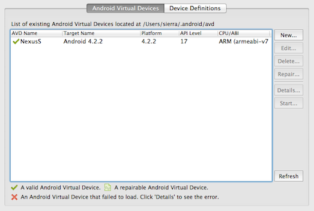

Android Platform Guide
This guide shows how to set up your SDK environment to deploy Cordova apps for Android devices, and how to optionally use Android-centered command-line tools in your development workflow. You need to install the Android SDK regardless of whether you want to use these platform-centered shell tools or cross-platform Cordova CLI for development. For a comparison of the two development paths, see the Overview. For details on the CLI, see The Command-Line Interface.
Requirements and Support
Cordova for Android requires the Android SDK. See the Android SDK's System Requirements.
Cordova supports Android 2.3.x (Gingerbread, starting with Android API level 10) and 4.x. As a general rule, Android versions become unsupported by Cordova as they dip below 5% on Google's distribution dashboard. Android versions earlier than API level 10, and the 3.x versions (Honeycomb, API levels 11-13) fall significantly below that 5% threshold.
Install Cordova Shell Tools
If you want to use Cordova's Android-centered shell tools in conjunction with the SDK, download Cordova from cordova.apache.org. Otherwise ignore this section if you plan to use the cross-platform CLI tool described in The Command-Line Interface.
The Cordova download contains separate archives for each platform. Be
sure to expand the appropriate archive, android in this case, within
an empty directory. The relevant executible utilities are available
in the top-level bin directory. (Consult the README file if
necessary for more detailed directions.)
These shell tools allow you to create, build, and run Android apps. For information on the additional command-line interface that enables plugin features across all platforms, see Using Plugman to Manage Plugins. See Application Plugins for details on how to develop plugins.
Install the Android SDK from developer.android.com/sdk. The android sdk is distributed as an 'adt-bundle-<os>-<arch>-<ver>' file. On windows, the adt-bundle is packaged with an installer. On OSX and Linux, simply unpack the 'adt-bundle' in the location you store development tools. More detailed information on Android SDK setup can be found here
For Cordova command-line tools to work, or the CLI that is based upon
them, you need to include the SDK's tools and platform-tools
directories in your PATH. On a Mac, you can use a text editor to
create or modify the ~/.bash_profile file, adding a line such as the
following, depending on where the SDK installs:
export PATH=${PATH}:/Development/adt-bundle/sdk/platform-tools:/Development/adt-bundle/sdk/tools
Add the paths for java and ant if needed. This line in ~/.bash_profile
exposes these tools in newly opened terminal windows. If your terminal
window is already open in OSX, or to avoid a logout/login on Linux, run
this to make them available in the current terminal window:
$ source ~/.bash_profile
To modify the PATH environment on Windows 7:
Click on the Start menu in the lower-left corner of the desktop, right-click on Computer, then select Properties.
Select Advanced System Settings in the column on the left.
In the resulting dialog box, press Environment Variables.
Select the PATH variable and press Edit.
-
Append the following to the
PATHbased on where you installed the SDK, for example:;C:\Development\adt-bundle\sdk\platform-tools;C:\Development\adt-bundle\sdk\tools Save the value and close both dialog boxes.
You may also need to enable Java and Ant. Open a command prompt and
type java, and also type ant. Append to the PATH whichever of
these fails to run:
;%JAVA_HOME%\bin;%ANT_HOME%\bin
Open a New Project in the SDK
At this point, to create a new project you can choose between the cross-platform CLI tool described in The Command-Line Interface, or the set of Android-specific shell tools. From within a source-code directory, here's the CLI approach:
$ cordova create hello com.example.hello HelloWorld
$ cd hello
$ cordova platform add android
$ cordova build
Here's the corresponding lower-level shell-tool approach for both Unix and Windows:
$ /path/to/cordova-android/bin/create /path/to/new/hello com.example.hello HelloWorld
C:\path\to\cordova-android\bin\create.bat C:\path\to\new\hello com.example.hello HelloWorld
Here's how to use the SDK to modify it:
Launch the Eclipse application.
Select the New Project menu item.
-
Choose Android Project from Existing Code from the resulting dialog box, and press Next:

If you're using the CLI, navigate to the
hellodirectory you created for the project, then to theplatforms/androidsubdirectory. Alternately, if you use thecreateshell utility, simply navigate to thehellodirectory.Press Finish.
Once the Eclipse window opens, a red X may appear to indicate unresolved problems. If so, follow these additional steps:
Right-click on the project directory.
In the resulting Properties dialog, select Android from the navigation pane.
For the project build target, select the highest Android API level you have installed.
Click OK.
Select Clean from the Project menu. This should correct all the errors in the project.
Build the Project
If you are using the CLI in development, the project directory's
top-level www directory contains the source files. Run either of
these within the project directory to rebuild the app:
$ cordova build
$ cordova build android # do not rebuild other platforms
If you are using the Android-specific shell tools in development,
there is a different approach. Once you generate the project, the
default app's source is available in the assets/www subdirectory.
Subsequent commands are available in its cordova subdirectory.
The build command cleans project files and rebuilds the app. Here is
the syntax for both Mac and Windows. The first pair of examples
generate debugging information, and the second signs the apps for
release:
$ /path/to/project/cordova/build --debug
C:\path\to\project\cordova\build.bat --debug
$ /path/to/project/cordova/build --release
C:\path\to\project\cordova\build.bat --release
Configure an Emulator
You can use either the cordova CLI utility or Cordova's
Android-centered shell tools to run an app in an emulator. Either
way, the SDK must first be configured to display at least one device.
To do so, use the Android SDK Manager, a Java application that runs
separately from Eclipse. There are two ways to open it:
Run
androidon the command line.-
From within Eclipse, press this toolbar icon:
Once open, the Android SDK Manager displays various runtime libraries:
Choose Tools → Manage AVDs (Android Virtual Devices), then choose any item from Device Definitions in the resulting dialog box:

Press Create AVD, optionally modifying the name, then press OK to accept the changes:
The AVD then appears in the Android Virtual Devices list:

To open the emulator as a separate application, select the AVD and press Start. It launches much as it would on the device, with additional controls available for hardware buttons:

Deploy to Emulator
At this point you can use the cordova CLI utility to deploy the
application to the emulator from the command line:
$ cordova emulate android
Otherwise use the alternate shell interface:
$ /path/to/project/cordova/run --emulator
Instead of relying on whichever emulator is currently enabled within the SDK, you can refer to each by the names you supply:
$ /path/to/project/cordova/run --target=NAME
This pushes the app to the home screen and launches it:
When you run the app, you also build it. You can append additional
--debug, --release, and --nobuild flags to control how it is
built, or even whether a rebuild is necessary:
$ /path/to/project/cordova/run --emulator --nobuild
If instead you are working within Eclipse, right-click the project and choose Run As → Android Application. You may be asked to specify an AVD if none are already open.
For a faster experience, you can use the Virtual Machine Acceleration to improve
the execution speed.
Many modern CPUs provide extensions to execute Virtual Machines more efficiently.
Before attempting to use this type of acceleration, you need to determine if your
current development system's CPU, supports one the following virtualization technologies:
- Intel Virtualization Technology (VT-x, vmx) → Intel VT-x supported processor list
- AMD Virtualization (AMD-V, SVM), only supported for Linux (Since May 2006, all CPUs AMD include AMD-V, except Sempron).
Another way to find out if your Intel processor supports VT-x Technology, it's by executing the
Intel Processor Identification Utility, for Windowsyou can download it from the Intel Download Center,
or you can use the booteable utility, which is OS Independent.
After install and execute the Intel Processor Identification Utility over Windows, you will get the following window,
in order to check if your CPU supports the Virtualization Technologies:
In order to speed up the emulator, you need to download and install one or more Intel x86 Atom System Images,
as well as the Intel Hardware Accelerated Execution Manager (HAXM).
Open your Android SDK Manager, and select the Intel x86 Atom System Image, for whichever version that you want to test. Then go to Extras
and select Intel x86 Emulator Accelerator (HAXM), and install those packages:
After download, run the Intel installer, which is available within your
Android SDK at extras/intel/Hardware_Accelerated_Execution_Manager.
Note:If you have any problems installing the package, you can find more information and step by step guidance check this
Intel Article.
Install one or more
Intel x86 AtomSystem Images as well as theIntel Hardware Accelerated Execution Manager, available under Extras.Run the Intel installer, which is available within your Android SDK at
extras/intel/Hardware_Accelerated_Execution_Manager.Create a new AVD with the target set to an Intel image.
When starting the emulator, ensure there are no error messages indicating a failure to load HAX modules.
Deploy to Device
To push an app directly to the device, make sure USB debugging is enabled on your device as described on the Android Developer Site, and use a mini USB cable to plug it into your system.
You can use this CLI command to push the app to the device:
$ cordova run android
...or use this Android-centered shell interface:
$ /path/to/project/cordova/run --device
With no flags specified, the run command detects a connected
device, or a currently running emulator if no device is found,
otherwise it prompts to specify an emulator.
To run the app from within Eclipse, right-click the project and choose Run As → Android Application.
Other Commands
The following generates a detailed log of the app as it runs:
$ /path/to/project/cordova/log
C:\path\to\project\cordova\log.bat
The following cleans the project files:
$ /path/to/project/cordova/clean
C:\path\to\project\cordova\clean.bat